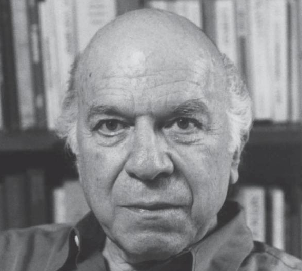

2026-7 Arendt/Schürmann Symposium on Stanley Cavell

|
October 2026 Friday 30th & Saturday 31st 11 AM-6 PM |
The New School Wollman Hall 72 5th Avenue New York, NY 10011 |
On Friday, October 30, and Saturday, October 31, the Philosophy Department at the New School for Social Research will host a two-day conference devoted to the work of Stanley Cavell. The conference will focus on Cavell’s writings on aesthetics, with particular attention to the role that skepticism about other minds plays in his interpretation of art.
To attend, register here.
Schedule
Fri, Oct 30
| 11:00 AM | Opening remarks Zed Adams (NSSR) |
| 11:15 AM | Francey Russell
(Barnard College and Colombia University) Title |
| 12:45 PM | Lunch |
| 2:00 PM | Benjamin Y. Goff
(Ph.D. Candidate at King's College London) Title |
| 3:30 PM | Coffee hour |
| 4:30 PM | Alice Crary (NSSR) Title |
Sat, Oct 31
| 11:00 AM | Byron Davies (University of Murcia) Title |
| 12:45 PM | Lunch |
| 2:00 PM | V. Joshua Adams (University of Louisville) Title |
| 3:30 PM | Coffee |
| 4:30 PM | Paola Marrati (Johns Hopkins University) Title |